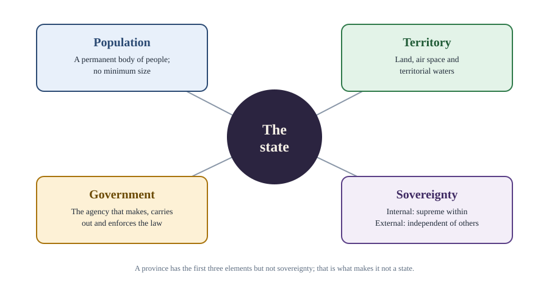
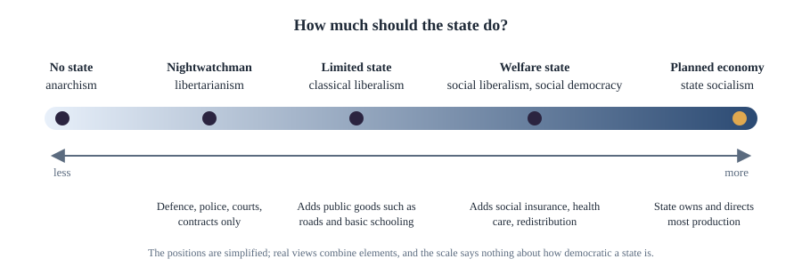

Chapter 2: The State and Sovereignty¶
What the state is, where it came from, and the idea of supreme authority
Learning outcomes
When you have finished this chapter you should be able to:
- define the state and distinguish it from government, nation and society;
- list the elements of a state and apply them to borderline cases;
- compare the main theories of the origin of the state, especially the social contract theories of Hobbes, Locke and Rousseau;
- explain the concept of sovereignty and its kinds: internal and external, legal and political, popular;
- set out Austin's theory of sovereignty and the pluralist criticism of it;
- compare liberal, Marxist, pluralist and feminist views of the state, and discuss how globalisation affects sovereignty.
2.1 What is the state?¶
We speak of "the state" constantly: the state builds roads, the state collects taxes, the state should do more for the poor. Yet the state is not a thing you can point to. You can see a police officer, a court building or a tax form, but the state is the organisation that stands behind all of them and gives them their authority.
The most influential modern definition comes from the German sociologist Max Weber (1864–1920). In a lecture of 1919, "Politics as a Vocation", he defined the state as a human community that successfully claims the monopoly of the legitimate use of physical force within a given territory. Three parts of this definition matter.
- Force. What is distinctive about the state is not its aims (many organisations seek welfare or order) but its means: in the last resort it can compel.
- Monopoly. Other people may use force only with the state's permission, as in self-defence or by private security guards licensed by it.
- Legitimacy. The state claims that its use of force is rightful, and its claim is broadly accepted. A gang that extorts money uses force too, but it does not claim, and is not granted, the right to do so.
Weber's definition describes what all states have in common; it does not say what states should do. That is a normative question taken up later in this chapter and throughout the book.
State, government, nation and society¶
Four words are often confused.
| Term | Meaning | Example of the difference |
|---|---|---|
| State | The permanent political organisation of a people on a territory, with sovereign authority | The Indian state continues while governments change |
| Government | The people and institutions that exercise the state's authority at a given time | A government can be voted out; the state remains |
| Nation | A community of people who see themselves as sharing an identity and a political destiny (Chapter 9) | One nation may span several states, and one state may contain several nations |
| Society | The whole network of social relations among people, including families, markets, religions and associations | Society existed before the modern state and includes much that the state does not control |
Table 2.1. State, government, nation and society.
The distinction between state and government is especially important in a democracy. Citizens can oppose the government of the day, campaign against it and vote it out, without being disloyal to the state.
Key idea
The state is the political organisation that claims supreme authority, and a monopoly of legitimate force, over a territory and its people. The government is the agency through which the state acts at any moment.
2.2 The elements of the state¶
Textbooks traditionally list four elements of a state, and international law uses a similar list. The Montevideo Convention on the Rights and Duties of States (1933) says that a state should possess a permanent population, a defined territory, a government, and the capacity to enter into relations with other states.

- Population. A state needs people. There is no minimum: the population of some small island states is a few thousand, while India's is well over a billion.
- Territory. A state has a defined area of land, with its air space and territorial waters. Borders may be disputed without destroying statehood.
- Government. There must be an organisation that makes and enforces laws and conducts relations with other states. A territory with no effective government at all is not, in practice, a functioning state.
- Sovereignty. The state's authority is supreme within its territory and independent of external control. This is what distinguishes a state from a province or a municipality, which have population, territory and government but are subject to a higher authority.
Some writers add recognition by other states. Whether recognition creates statehood or merely acknowledges it is disputed in international law. The "declaratory" view holds that an entity meeting the criteria is a state whether or not others recognise it; the "constitutive" view holds that recognition is part of what makes it one.
Worked example 2.1: Is it a state?
Cases. (a) A province of a federal country with its own legislature, police and flag. (b) A territory that declares independence, controls its land and people, but is recognised by almost no other states. (c) A small island country with a population of about ten thousand, a parliament and a seat at the United Nations.
Answer. (a) is not a state: it lacks sovereignty, since the federal constitution and federal law bind it. (b) is a contested case: it has population, territory and government, and claims sovereignty, but its capacity to conduct relations with other states is limited by lack of recognition. On the declaratory view it may be a state; on the constitutive view it is not. (c) is a state: size is not one of the criteria.
2.3 Theories of the origin of the state¶
How did states come into being, and does their origin tell us anything about why we should obey them? Several theories have been offered. Some are historical guesses; others, notably the social contract, are better read as arguments about justification.
- Divine origin. The state, and the authority of the ruler, were created by God. In seventeenth-century Europe this became the divine right of kings, defended for example by Robert Filmer, whose Patriarcha (published 1680) argued that kings inherited their authority from Adam. Locke's First Treatise was a reply to Filmer. The theory gave rulers great authority but made it hard to criticise them.
- Force. The state arose when a strong group conquered and subjugated others. There is historical truth in this: many states were founded by conquest. But it explains how power was seized, not why it should be obeyed.
- Patriarchal and matriarchal theories. The state grew out of the family, with the authority of the father (or mother) extended to the clan, the tribe and the kingdom. Aristotle described the household growing into the village and the village into the polis.
- Evolutionary or historical theory. The state grew gradually from many factors together: kinship, religion, the need for defence, the rise of agriculture and property, and political consciousness. Most historians and anthropologists today accept a version of this view.
- Marxist theory. The state arose when society split into classes with the growth of private property, as an instrument by which the owning class keeps the others in subjection. Friedrich Engels set this out in The Origin of the Family, Private Property and the State (1884).
- Social contract. The state was created, or can be justified, by an agreement among individuals who were previously in a "state of nature" without government.
2.4 The social contract: Hobbes, Locke and Rousseau¶
The social contract tradition is the most important of these theories for political theory, because it links the origin of the state to the question of political obligation: why, and when, should we obey? Its three classic versions start from different pictures of human nature and reach different conclusions.
Thomas Hobbes¶
Thomas Hobbes (1588–1679) wrote Leviathan (1651) after the English Civil War. He asked what life would be like with no government at all. People are roughly equal in their ability to harm one another, they compete for scarce goods, they fear one another and they seek glory. Without a common power to keep them in awe, the natural condition would be a war of every man against every man. In this condition there would be no industry, agriculture, arts or society, and, in his famous words, the life of man would be "solitary, poor, nasty, brutish, and short".
Rational people would therefore agree to give up their natural liberty to do whatever they judge necessary for their survival, and to authorise a sovereign (one person or an assembly) to act for them all. The sovereign must be absolute and undivided, since a divided or limited authority would lead back to civil war. Subjects keep only the right to defend their own lives: they need not obey a command to kill themselves, and their obligation ends if the sovereign can no longer protect them.
John Locke¶
John Locke (1632–1704), in the Second Treatise of Government (1689), drew a gentler picture. The state of nature is governed by a law of nature, known by reason, which teaches that no one ought to harm another in his life, health, liberty or possessions. People have natural rights to life, liberty and property (which he called, together, their "property" in a broad sense). The trouble with the state of nature is not constant war but inconvenience: there is no settled known law, no impartial judge and no power to enforce judgements, so each person must judge and punish in his own case.
People therefore consent to form a political society and a government to protect their rights better. The government is a trust: it has limited powers, must rule by known laws, may not take property without consent (through representatives), and should separate the legislative from the executive power. If it violates the trust, by attacking the rights it exists to protect, the people may resist it and establish a new government. Locke's ideas influenced the American Declaration of Independence (1776).
Jean-Jacques Rousseau¶
Jean-Jacques Rousseau (1712–1778) opened The Social Contract (1762) with a famous line: "Man is born free; and everywhere he is in chains." In his earlier Discourse on the Origin of Inequality (1755) he had argued that natural man was solitary, peaceful and moved by self-love and pity; it was the growth of property and society that bred inequality, vanity and dependence. The problem was not to return to nature, which is impossible, but to find a form of association in which each person, while uniting with all, obeys only himself and remains as free as before.
His answer is that each person gives himself wholly to the community, which then acts by the general will: the will of the citizens directed at the common good, as distinct from the "will of all", which is merely the sum of private interests. Sovereignty belongs inalienably to the people as a whole and cannot be represented; laws must be made by the citizens themselves. Rousseau added a troubling phrase: whoever refuses to obey the general will shall be compelled to do so by the whole body, which means, he said, that he will be forced to be free. Admirers read Rousseau as a founder of democratic self-government; critics, such as Isaiah Berlin and J. L. Talmon, saw in the general will a danger of tyranny in the name of the people (Chapter 4).
| Hobbes | Locke | Rousseau | |
|---|---|---|---|
| Main work | Leviathan (1651) | Second Treatise (1689) | The Social Contract (1762) |
| Human nature | Self-interested, fearful, competitive | Rational, guided by natural law | Naturally good, corrupted by society |
| State of nature | War of all against all | Peaceful but insecure; rights unprotected | Solitary and free; later corrupted by property |
| Why contract? | Security and survival | Better protection of life, liberty and property | To regain freedom in society |
| Sovereign | Absolute ruler or assembly | Limited government under the people's trust | The people as a whole (general will) |
| Right to resist | Only in self-defence | Yes, if government breaks its trust | Sovereignty stays with the people |
Table 2.2. The three classic social contract theories compared.
Criticisms of the social contract¶
- It never happened. David Hume objected that almost all governments were founded on conquest or usurpation, and that people did not consent to them. Most modern contract theorists accept this and treat the contract as hypothetical: a test of what free and rational people would agree to. Rawls's original position (Chapter 6) is a hypothetical contract of this kind.
- Consent is thin. Locke suggested that living in a country and using its roads amounts to tacit consent. Hume replied that a poor peasant who knows no foreign language and lives from day to day has no real choice to leave, so his staying is not consent.
- Who is party to it? Feminist critics, notably Carole Pateman in The Sexual Contract (1988), argued that the classic theories presupposed the subordination of women in the family; critics of colonialism, such as Charles Mills in The Racial Contract (1997), argued that the contract in practice included only some people.
2.5 Sovereignty¶
Sovereignty means supreme authority. The modern idea was first set out systematically by the French jurist Jean Bodin in Six Books of the Commonwealth (1576), during the French wars of religion. Bodin defined sovereignty as the absolute and perpetual power of a commonwealth, and its chief mark as the power to give law to all without the consent of any. Hobbes gave the idea its most uncompromising form.
Internal and external sovereignty¶
- Internal sovereignty is the supremacy of the state over all persons and associations within its territory. No church, corporation or local body has authority except under the state's law.
- External sovereignty is the independence of the state from control by any other state. In international law all sovereign states are formally equal. This principle is often traced to the Peace of Westphalia (1648), which ended the Thirty Years' War, though historians debate how much the treaties themselves established it.
Legal, political and popular sovereignty¶
- Legal sovereignty belongs to the authority that has the final power to make law, recognised by the courts. In the British system this is Parliament: the constitutional lawyer A. V. Dicey described Parliament as able to make or unmake any law.
- Political sovereignty belongs to the body whose will is ultimately obeyed in practice and to which the legal sovereign must answer. Dicey placed it with the electorate.
- Popular sovereignty is the principle that ultimate authority rests with the people. It is proclaimed in many constitutions. The Preamble of the Constitution of India begins "We, the people of India" and says the people "do hereby adopt, enact and give to ourselves this Constitution".
In a country with a written constitution and judicial review, such as India or the United States, legal sovereignty is not located in any single organ: the legislature, the executive and the courts each act within limits set by the constitution, which can be changed only by a special procedure. Some writers therefore say that the constitution itself, or the people who authorise it, is sovereign.
2.6 Austin's theory and the pluralist attack¶
The English jurist John Austin, in The Province of Jurisprudence Determined (1832), gave the classic legal theory of sovereignty. Law is a command of the sovereign, backed by a sanction. The sovereign is a determinate person or body that receives habitual obedience from the bulk of a society, and is not in the habit of obeying any other human superior. On this view sovereignty is:
- absolute: it has no legal limits;
- indivisible: it cannot be shared, since two supreme authorities would contradict each other;
- inalienable: it cannot be transferred without destroying the state;
- permanent and universal: it lasts as long as the state and extends to everyone within it.
Criticisms¶
Austin's theory was criticised from several sides.
- Legal theorists, such as H. L. A. Hart in The Concept of Law (1961), argued that law is not simply commands backed by threats. Much law confers powers (to make a contract, a will or a marriage) rather than imposing duties, and the authority of a legislature rests on rules that are accepted, not on habits of obedience to a person.
- Federal and constitutional states divide authority between levels and organs of government, which Austin's indivisible sovereign cannot easily describe.
- Pluralists, writing in the early twentieth century, attacked the very idea of a monolithic sovereign. F. W. Maitland and J. N. Figgis argued that churches, trade unions, universities and guilds have a real life and authority of their own, not granted by the state. Harold Laski argued that the state is one association among many, whose claim to obedience depends on how well it serves its members; he wrote that it would be good for political science if the whole concept of sovereignty were surrendered. Pluralists wanted a society in which authority is dispersed and the state coordinates rather than commands.
Caution: two senses of pluralism
"Pluralism" has several meanings in political theory. The pluralist theory of sovereignty (Laski, Figgis) denies that the state's authority is absolute. The pluralist theory of democracy (Dahl, Chapter 8) describes politics as competition among many groups. Value pluralism (Berlin, Chapter 4) holds that there are many genuine values that cannot be reduced to one. And cultural pluralism refers to the coexistence of many cultures (Chapter 12). Always ask which is meant.
2.7 What is the state for? Four views¶
Theories of the state answer two linked questions: whose interests does the state actually serve, and what should it do?
The liberal view¶
Liberals see the state as a neutral umpire, created by individuals to protect their rights and settle their disputes. Classical liberals favour a limited or "nightwatchman" state confined to defence, police, courts and the enforcement of contracts. Social liberals accept a larger role: public education, health care and social insurance, to give everyone the real capacity to use their freedom. The welfare state of the twentieth century, built in many democracies after the Second World War, reflects this second view. Libertarians such as Nozick defend the minimal state as the most extensive state that can be justified (Chapter 6).
The Marxist view¶
Marx and Engels argued that the state is not neutral. In the Communist Manifesto (1848) they wrote that "the executive of the modern State is but a committee for managing the common affairs of the whole bourgeoisie". The state protects private property and the class that owns the means of production. Later Marxists qualified this. Antonio Gramsci emphasised that ruling classes rule mainly by hegemony, winning consent through culture and ideas, and only partly by force (Chapter 3). Others argued that the state has relative autonomy: it must sometimes act against particular capitalists to preserve the system as a whole. Marx expected that after a revolution and a transitional period the state would eventually "wither away", in Engels's phrase, as classes disappeared.
The pluralist view¶
Pluralists see the state as an arena in which many groups (business, labour, professions, religious and regional groups) compete for influence, and policy as the outcome of their bargaining. No single group dominates all decisions. Critics reply that groups are very unequal in resources and access, so that the playing field is tilted, especially towards business; Charles Lindblom made this argument in Politics and Markets (1977).
The feminist view¶
Feminists argue that the state has historically reflected and reinforced male power, for example in laws on property, marriage, citizenship and violence, and by treating the family as a private sphere beyond the reach of justice. Liberal feminists seek to reform the state through equal rights; radical feminists see patriarchy as deeply built into it; others see the state as a site of struggle that can be used to advance women's interests (Chapter 12).

2.8 Sovereignty in a globalised world¶
Is the sovereign state still the main unit of politics? Several developments are often said to challenge it.
- Economic globalisation. Capital, goods and information move across borders quickly, and states compete to attract investment. Some argue that this limits the real choices open to governments; others reply that states still set taxes, regulate markets and spend large shares of national income.
- International organisations and law. States accept obligations under treaties, trade agreements, human rights conventions and the United Nations Charter. The European Union is the most developed example of states pooling sovereignty, with a court whose rulings bind member states.
- Human rights and intervention. The idea that sovereignty includes a responsibility to protect one's population (Chapter 14) qualifies the old principle of non-intervention.
- Global problems. Climate change, pandemics and financial crises cannot be solved by any one state.
- Non-state actors. Multinational corporations, transnational movements and armed groups act across borders.
Defenders of the sovereign state point out that states created and can leave most international institutions, that they remain the main providers of security, welfare and rights, and that sovereignty protects weaker states and peoples against domination by stronger ones. This last point was central to anti-colonial movements, for which winning sovereignty was the goal. The debate is not whether sovereignty has disappeared, but how far and in what ways it is being shared, limited or transformed.
Worked example 2.2: Does a treaty limit sovereignty?
Situation. A country signs a treaty agreeing to reduce its emissions of greenhouse gases and to accept international review of its progress.
Analysis. On the legal view, the country exercised its sovereignty by choosing to sign, and could in principle withdraw: sovereignty is intact. On a practical view, its freedom of action is now constrained, since withdrawal would be costly, and some decisions are shaped by international review. A pluralist might say this shows that authority is shared among many bodies, and that this is no bad thing. A defender of strong sovereignty might worry that unelected international bodies weaken democratic self-government. Each view captures something; the example shows why sovereignty is better understood today as a matter of degree.
Summary
- Weber defined the state as a community that successfully claims the monopoly of the legitimate use of physical force within a territory. The state is distinct from the government, the nation and society.
- Its elements are population, territory, government and sovereignty; international law adds the capacity to enter into relations with other states.
- Theories of origin include divine right, force, patriarchal, evolutionary, Marxist and social contract theories.
- Hobbes justified an absolute sovereign as the escape from a war of all against all; Locke a limited government holding power in trust to protect natural rights; Rousseau the sovereignty of the people expressed in the general will.
- Sovereignty is supreme authority: internal and external; legal, political and popular. Austin saw it as absolute and indivisible; pluralists such as Laski rejected this.
- Liberals, Marxists, pluralists and feminists give different accounts of whose interests the state serves. Globalisation and international law have made sovereignty more shared and limited, but the state remains central.
2.9 Exercises¶
Exercise 1
Explain each part of Weber's definition of the state, and say why a criminal gang that controls a neighbourhood is not a state.
Answer
The state is a human community that (i) uses physical force as its distinctive means, (ii) holds a monopoly of it, permitting others to use force only by its leave, (iii) claims legitimacy for that use, (iv) within a given territory, and does so successfully. A gang uses force and may control an area, but it neither claims nor is generally granted the right to do so: its force is not regarded as legitimate, and it does not hold a monopoly against the state's own police.
Exercise 2
Distinguish the state from the government. Why does the distinction matter in a democracy?
Answer
The state is the permanent political organisation with sovereign authority; the government is the set of people and institutions exercising that authority at a given time. In a democracy citizens may oppose, criticise and remove the government without being disloyal to the state; treating opposition to a government as hostility to the state would undermine democratic competition.
Exercise 3
Compare Hobbes and Locke on (a) the state of nature, (b) the powers of the sovereign and (c) the right of resistance.
Answer
(a) Hobbes: a war of all against all, with life "solitary, poor, nasty, brutish, and short". Locke: a condition governed by natural law, peaceful but insecure because there is no impartial judge or enforcer. (b) Hobbes: the sovereign is absolute and undivided. Locke: government is limited, a trust bound to protect life, liberty and property and to rule by known laws. (c) Hobbes: subjects may resist only to save their own lives. Locke: the people may resist and replace a government that violates its trust.
Exercise 4
What is the difference between the general will and the will of all in Rousseau? Why have some critics found the idea of the general will dangerous?
Answer
The will of all is the sum of private wills, each aiming at a person's own interest. The general will is the will of citizens directed at the common good. Critics fear that anyone claiming to know the general will may override what people actually want, in the name of their "true" interest; Rousseau's phrase that a person who disobeys may be "forced to be free" seems to license this. Defenders reply that for Rousseau the general will is expressed only through laws that all citizens make together and that apply equally to all.
Exercise 5
State four characteristics of sovereignty according to Austin, and give two criticisms of his theory.
Answer
Austin's sovereign is absolute, indivisible, inalienable and permanent (and universal). Criticisms: (1) Hart: law is not just commands backed by threats; power-conferring rules and accepted rules of recognition are central. (2) Federal and constitutional states divide authority, and sovereignty seems to lie with the constitution or the people rather than a determinate person. (3) Pluralists (Laski, Figgis) argue that associations have authority of their own and the state is not absolute.
Exercise 6
A student says: "Globalisation has made the sovereign state obsolete." Give one argument for and one against.
Answer
For: capital mobility, international law, supranational bodies such as the European Union and global problems such as climate change limit what any state can do alone, so supreme and independent authority is increasingly fictional. Against: states created and can leave international institutions, still raise taxes, make law and provide security, and sovereignty remains the main protection of weaker peoples against domination. Many scholars conclude that sovereignty has been transformed and shared rather than made obsolete.
2.10 Quiz¶
Check yourself: the state and sovereignty
Exercise 1
Who defined the state as claiming the monopoly of the legitimate use of physical force within a territory?
- Hobbes
- Weber
- Austin
- Laski
Answer
Weber
Exercise 2
Which convention of 1933 lists the criteria of statehood in international law?
- Geneva Convention
- Montevideo Convention
- Vienna Convention
- Hague Convention
Answer
Montevideo Convention
Exercise 3
Match each thinker with a view of the state of nature.
| A | B |
|---|---|
| Hobbes | Governed by natural law but insecure |
| Locke | Free and peaceful until corrupted by property |
| Rousseau | A war of all against all |
Answer
Hobbes — A war of all against all; Locke — Governed by natural law but insecure; Rousseau — Free and peaceful until corrupted by property
Exercise 4
Who first set out the modern theory of sovereignty in Six Books of the Commonwealth (1576)?
- Jean Bodin
- John Austin
- Thomas Hobbes
- Hugo Grotius
Answer
Jean Bodin
Exercise 5
Which English pluralist thinker argued that the concept of sovereignty should be surrendered? (surname)
Answer
Laski / Harold Laski
Exercise 6
Austin described sovereignty as all of the following except
- absolute
- indivisible
- divided between levels of government
- permanent
Answer
divided between levels of government
Exercise 7
Which Italian Marxist emphasised rule by hegemony, through consent as well as force?
- Gramsci
- Engels
- Lenin
- Bernstein
Answer
Gramsci
Exercise 8
Locke's idea that living in a country and using its roads amounts to agreement is called
- express consent
- tacit consent
- hypothetical consent
- general will
Answer
tacit consent